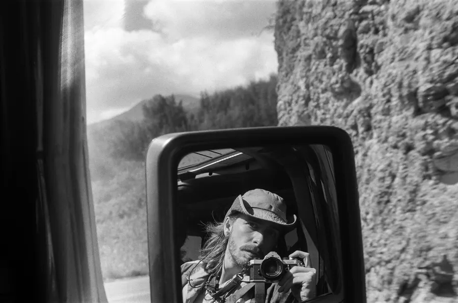
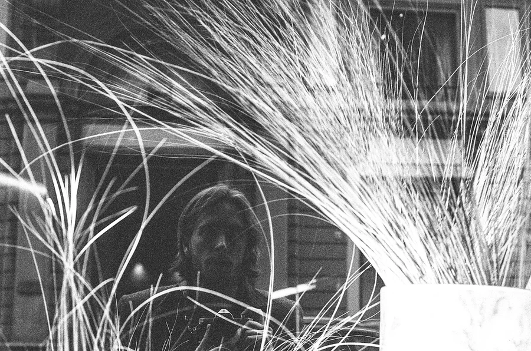
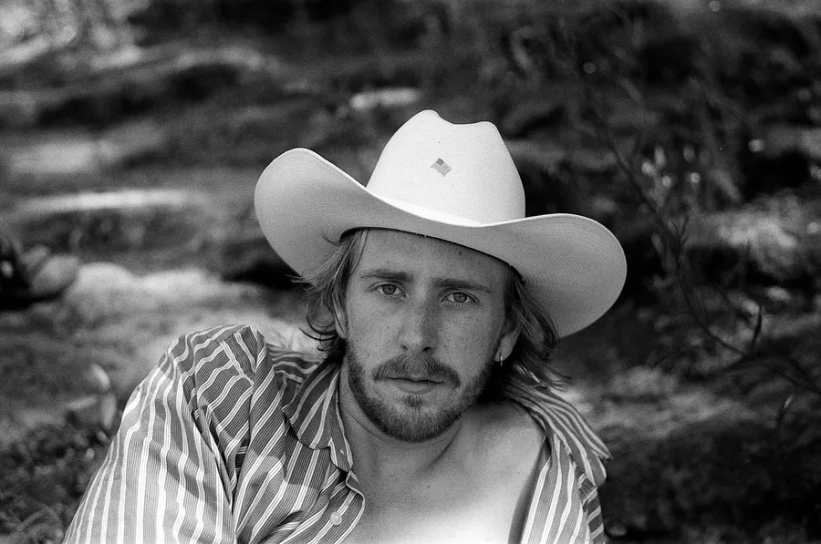
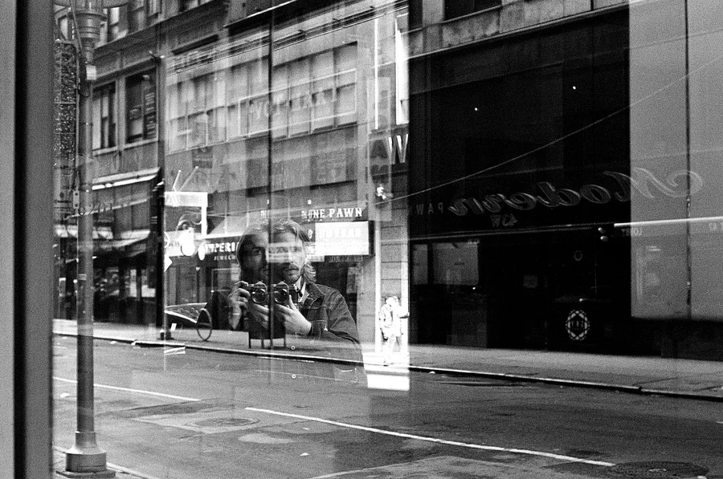

About
My name is Sawyer. I’m twenty-four years old, born and raised in Tulsa, Oklahoma. I keep my Konica Autoreflex T3 with me if I'm going anywhere worth while. I mostly shoot HP5 and develop it myself. Most of my photos come from traveling, wandering aimlessly, and trying to capture small moments that feel worth remembering. I am based out of Portland, Oregon for now.



